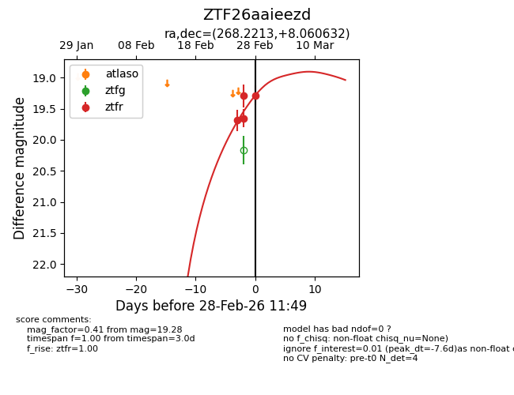
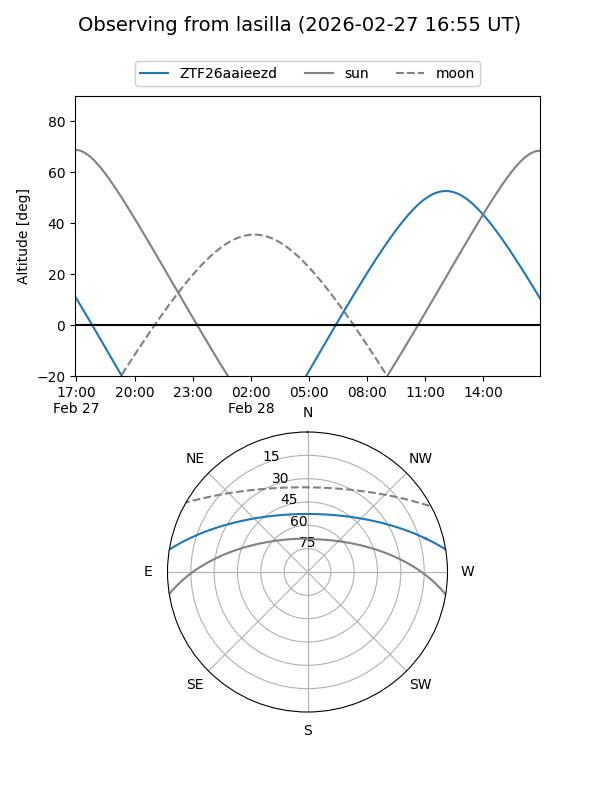
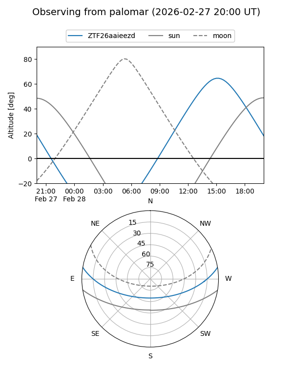
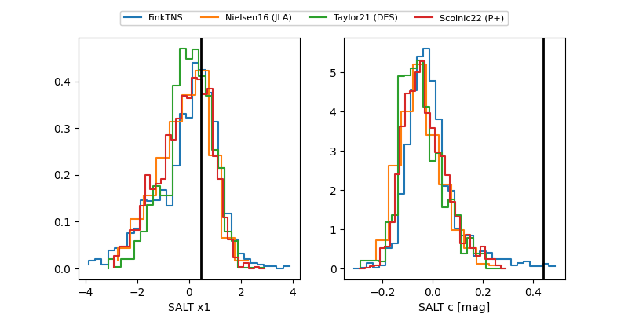

ZTF26aaieezd
Target ZTF26aaieezd at 2026-02-28 11:50
Aliases and brokers:
FINK: link
Lasair: link
ALeRCE: link
alt names
ZTF26aaieezd (ztf,fink_ztf)
Coordinates:
equatorial (ra, dec) = 268.2213,+8.06063
equatorial (HMS+DMS) = 17:52:53.12,+08:03:38.27
galactic (l, b) = (33.5719,+16.65621)
Flags:
Photometry:
last ztfr=19.28
4 ztfr detections
Lightcurve

Visibility


Additional plots
